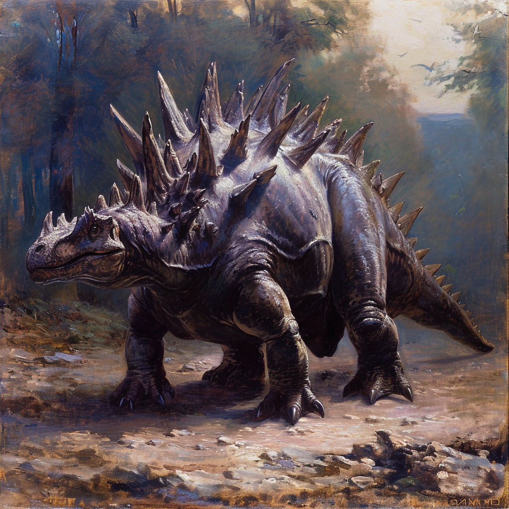

Stegosaurus
The Stegosaurus is one of the most recognizable dinosaurs, known for its distinctive back plates and spiked tail. This herbivorous dinosaur lived during the late Jurassic period, around 155 to 150 million years ago, primarily in what is now North America. The name "Stegosaurus" means "roofed lizard," referring to the bony plates that ran along its back.
Stegosaurus had a unique body structure, with a small head, bulky body, and a long tail armed with spikes known as the "thagomizer." These features made it well-adapted to its environment, where it likely used its plates for display and its tail spikes for defense.
Here are some key facts about Stegosaurus:
- Length: Approximately 30 feet (9 meters)
- Height: About 14 feet (4.3 meters) at the hips
- Weight: Up to 5 tons (4,536 kilograms)
- Diet: Herbivorous, primarily feeding on low-lying plants like ferns and cycads
- Location: Fossils found in North America, particularly in the western United States
Behavior and Habitat
Stegosaurus likely lived in herds, using its distinctive plates and tail spikes for defense against predators like Allosaurus. The function of its plates has been the subject of much debate, with theories suggesting they were used for thermoregulation, display, or species recognition.
- Back plates: The Stegosaurus had 17 bony plates along its back, which may have been used for display or temperature regulation.
- Spiked tail: The "thagomizer" consisted of four long spikes that the Stegosaurus could swing with great force to defend itself.
- Small brain: Despite its large body, the Stegosaurus had a relatively small brain, about the size of a walnut.
Download a Picture of Stegosaurus
Click the button below to download a high-quality image of a Stegosaurus.
Download Stegosaurus Image{kind=link}